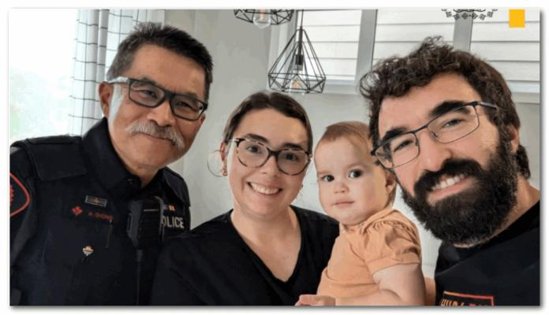
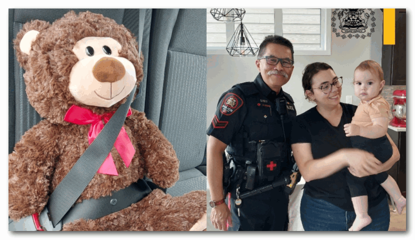

卡尔加里警察局分享了一名警官与他上周末救下的小孩重聚的温馨照片。
警方表示，周六晚上，警员Chong在Stoney Trail东行线上拦下了一辆超速行驶的车辆，但当他走近车时，发现里面坐着“极度悲痛”的一家人，后座上还有一个17个月大没有反应的女孩。
原来，孩子的父亲当时正赶往医院寻求帮助。
警方表示，女孩意识清醒，但显然需要救治。
在与孩子的父母确认孩子最近曾吃过东西后，Chong正确地判断出孩子是被噎住窒息了。
他立即采取行动，使用急救法用力拍打背部，才把食物弄出来。
虽然Chong帮助了女孩Camila把窒息物弄出，但她仍然需要医疗照顾，因此警官又护送这家人去了附近的South Health Campus医院。
警方表示，女孩得到了救治，随后被转移到阿尔伯塔儿童医院接受进一步治疗。几天后她出院了。

周四，卡尔加里警方在社交媒体上发布了这起暖心故事，并展示了这家人邀请Chong到家中做客后和他拍的合照。
警方表示，Chong送给Camila一只玩具熊作为礼物，女孩的父母Verga和Nacbar对他的帮助表示感谢。
“这家人给Chong赠送了一盒巧克力以表感谢，并表示与我们的警务人员相处非常愉快，他们将永远记住Chong警官在拯救Camila生命中所发挥的作用。”卡尔加里警方在帖子中写道。
网友评论：
“哇！原来超人穿的是卡尔加里警察的制服！”
“Chong警官值班时来过我的工作地点，他是我遇到过的最友善、说话最温和的警察之一。”
“这些故事温暖了我的心灵。谢谢分享！Chong 警官和所有响应的警官们做得好！”
YUAN，图片：警方